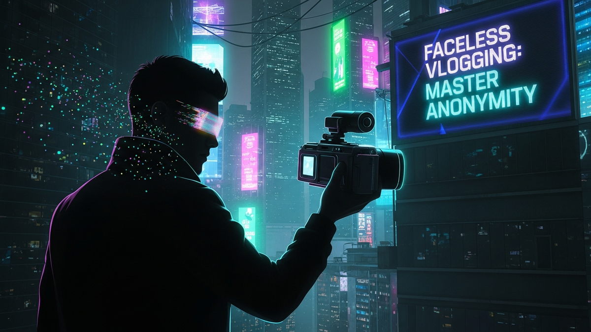

The digital landscape is constantly evolving, and with it, the very definition of a "creator." While the archetype of the charismatic, on-screen personality has long dominated platforms like YouTube and TikTok, a powerful counter-narrative is quietly gaining immense traction: the "faceless lifestyle" niche. This burgeoning movement empowers individuals to share their passions, expertise, and daily lives without ever revealing their identity. It's a testament to the idea that content quality and narrative depth can transcend the need for a recognizable face. For those seeking privacy, battling camera shyness, or simply wanting their message to stand on its own, faceless vlogging presents an unparalleled opportunity. It challenges conventional wisdom, proving that authenticity and connection aren't solely forged through visual recognition but through shared experiences, compelling storytelling, and the sheer power of an unseen voice. This comprehensive guide will delve deep into the mechanics, philosophy, and tools required to not just enter, but thrive within this innovative and liberating corner of the creator economy, allowing you to build a powerful brand and connect with millions, all while maintaining your personal veil of anonymity.
Embracing the faceless lifestyle niche isn't merely a creative choice; it's often a deeply personal and strategic one, rooted in a compelling philosophy that prioritizes content and privacy over personal exposure. At its core, this approach appeals to creators for a multitude of reasons, each contributing to a unique and often more sustainable creative journey. One of the most significant drivers is the profound desire for privacy and anonymity. In an age where digital footprints are indelible and personal information is constantly exposed, many individuals feel a strong need to delineate between their public creative persona and their private life. Faceless vlogging offers a sanctuary, allowing creators to share their passions without the potential social pressures, scrutiny, or even safety concerns that can accompany public recognition. This can be particularly liberating for those in sensitive professions or those who simply value a clear boundary between work and personal identity.
Beyond privacy, faceless vlogging empowers individuals who experience camera shyness or anxiety. The pressure of performing for a camera, worrying about appearance, or articulating thoughts perfectly on the spot can be a significant barrier for many aspiring creators. By removing the face from the equation, creators can focus entirely on the content itself – the visual storytelling, the intricate details, the soothing sounds, or the informative narration. This shift alleviates immense pressure, allowing for a more natural and authentic expression of ideas. Instead of being consumed by self-consciousness, the creator can channel their energy into perfecting their craft, whether that’s a complex DIY project, a beautifully shot nature scene, or an engaging digital tutorial.
Furthermore, this niche fosters a unique brand of authenticity and niche focus. When the creator's face isn't the primary draw, the content itself must stand out. This forces a deeper dive into specific topics, cultivating highly specialized channels that attract dedicated audiences. For instance, an ASMR channel thrives on soundscapes, a cooking channel on the artistry of food preparation, or a travel channel on the immersive experience of a destination, all without the host ever needing to appear. This content-centric approach often leads to a more genuine connection with viewers who are genuinely interested in the subject matter, rather than just the personality. It allows the message to resonate more powerfully, unburdened by the creator's physical presence, fostering a community built around shared interests and appreciation for the craft.
From a strategic standpoint, faceless vlogging can also lead to a broader and more diverse audience appeal. Without a specific face or demographic attached to the channel, the content can transcend cultural, age, or gender barriers more easily. A beautifully shot montage of city life, a calming rain soundscape, or an intricate crafting tutorial can resonate with anyone, anywhere, regardless of who is behind the camera. This universal appeal can significantly expand a channel's reach and potential for growth. Moreover, it allows for greater flexibility in content creation and potential collaborations, as the focus remains firmly on the creative output rather than the individual. The philosophy of the unseen is about empowering the creator to share their vision on their own terms, proving that impact and influence are not solely dependent on visibility, but on the power of an idea beautifully executed.
The essence of successful faceless vlogging lies in its ability to tell a compelling story without ever showing the narrator's face. This demands a mastery of visual storytelling techniques, where every shot, every transition, and every frame contributes to a rich, immersive narrative. The camera becomes the viewer's eyes, and the creator’s skill lies in guiding that gaze through a carefully constructed visual journey. One of the most effective techniques is the extensive use of Point-of-View (POV) shots. By positioning the camera as if it were the viewer experiencing the scene directly, creators can immerse their audience. This is particularly powerful for lifestyle content like cooking (showing hands preparing food), travel (walking through a market, cycling down a path), or DIY projects (demonstrating tool usage). The POV shot makes the viewer an active participant, fostering a deeper, more personal connection to the activity unfolding on screen.
Complementing POV shots are strategic close-ups and macro photography, which draw attention to intricate details that might otherwise be overlooked. In a crafting video, a close-up of delicate stitching or the texture of a material adds depth and visual interest. For ASMR content, macro shots of objects being handled amplify the sensory experience. These detailed shots not only highlight the precision and effort involved but also create a sense of intimacy, inviting the viewer into the creator's world without revealing their identity. The careful framing and focus on specific elements can evoke strong emotions or convey complex information purely through visual cues, making the "unseen" creator's presence felt through their meticulous attention to detail.
B-roll footage is another indispensable tool in the faceless vlogger's arsenal. This supplemental footage, often used to cut away from the main action or to illustrate points made in a voiceover, is crucial for maintaining visual interest and enhancing the narrative. For a productivity channel, B-roll might include shots of a neatly organized desk, a steaming cup of coffee, or a rain-streaked window. A travel vlog could intersperse majestic landscape shots with close-ups of local cuisine or bustling street scenes. The judicious use of B-roll ensures that the viewer's eye is constantly engaged, preventing visual monotony and adding layers of context and atmosphere to the story being told. It allows for creative transitions and pacing, making the overall video flow more dynamically and professionally.
For channels focused on tutorials, gaming, or digital art, screen recordings and animations become the primary visual medium. High-quality screen recordings, often enhanced with annotations, zoom-ins, and highlight effects, can effectively convey complex software instructions or demonstrate digital processes. Animation, whether it's simple motion graphics, whiteboard animation, or more elaborate character animation, offers boundless creative freedom. It allows creators to represent abstract concepts, illustrate data, or even embody a virtual persona without revealing their real face. Tools like Adobe After Effects, DaVinci Resolve's Fusion page, or even simpler online animation platforms enable creators to bring their ideas to life in a visually engaging and unique manner. By combining these diverse visual techniques – from immersive POV and detailed close-ups to dynamic B-roll and innovative animations – faceless vloggers can construct rich, immersive narratives that captivate audiences and prove that a compelling story needs no face to be seen.
In the realm of faceless vlogging, where the visual identity of the creator is intentionally absent, audio transcends its traditional supporting role to become the very avatar of the storyteller. The judicious use of voiceovers, meticulously crafted sound effects, and atmospheric music doesn't just complement the visuals; it often defines the channel's identity and establishes the creator's presence. Therefore, investing in high-quality audio equipment is not merely recommended, but absolutely essential. A good microphone is paramount. Options range from affordable USB microphones like the Blue Yeti or Rode NT-USB+, perfect for beginners, to more professional XLR setups like the Shure SM7B (often paired with an audio interface like the Focusrite Scarlett 2i2) or a high-quality condenser mic for pristine vocal recordings. The choice depends on budget and the specific sonic aesthetic desired, but clarity, warmth, and minimal background noise are universal goals. Recording in a quiet, acoustically treated space, even if it's just a blanket fort or a closet lined with clothes, can dramatically improve sound quality, eliminating echoes and external distractions.
The voiceover itself is the creator's direct line to the audience. It's not just about conveying information; it's about building rapport, setting the tone, and infusing personality. Even without a face, a distinct voice, tone, and pacing can make a creator instantly recognizable. Practice is key to developing a clear, engaging delivery. Creators should focus on vocal clarity, articulation, and varying their pitch and pace to avoid monotony. A well-written script is crucial, but it should be delivered in a natural, conversational manner, rather than sounding read. Techniques such as pausing for emphasis, injecting enthusiasm, or adopting a calm, soothing tone (especially for ASMR or meditation content) can profoundly impact viewer engagement. Audio editing, including noise reduction, equalization (EQ), compression, and de-essing, further refines the voiceover, ensuring it sounds professional and polished, free from distracting pops, clicks, or hums.
Turn your scripts into professional videos automatically. Use code PAVEL20 for 20% OFF!
START CREATING WITH PICTORYBeyond the spoken word, sound design and soundscapes play an integral role in enriching the viewer's experience and providing sensory immersion. For a cooking channel, the sizzling of ingredients, the rhythmic chopping, or the gentle bubbling of a sauce can be as captivating as the visuals. In a nature-focused vlog, the chirping of birds, the rustle of leaves, or the distant sound of waves can transport the viewer directly into the scene. Platforms like Epidemic Sound, Artlist, or even free libraries like Freesound.org offer vast collections of royalty-free sound effects and music. Carefully selected background music can set the mood, evoke emotions, and guide the narrative arc, transitioning seamlessly from upbeat and energetic to calm and contemplative. It's crucial to choose music that complements the content without overpowering the voiceover or creating a distracting auditory environment. The goal is to create a harmonious blend where every auditory element contributes to the overall storytelling, making the unseen creator's presence felt through the rich, enveloping world of sound they meticulously construct.
Finally, for channels specifically dedicated to ASMR (Autonomous Sensory Meridian Response), audio is not just an avatar, but the entire essence of the content. Here, specialized microphones like binaural mics (e.g., 3Dio FS XLR) or sensitive condenser microphones are used to capture extremely subtle sounds – whispers, crinkling, tapping, brushing – with incredible fidelity. The focus shifts entirely to creating specific auditory triggers designed to induce relaxation or tingling sensations. In these cases, the visual component often serves merely as a backdrop to showcase the sound source, further emphasizing how powerful and central audio can be in the faceless niche. By mastering the art of sound, faceless vloggers don't just communicate; they create an entire sensory experience that resonates deeply with their audience, building a strong, memorable identity through the power of the ear.
Building a successful faceless vlogging channel necessitates a carefully curated arsenal of tools and technologies, designed to maximize visual and auditory quality while minimizing the need for on-camera presence. The right equipment and software empower creators to produce professional-grade content that stands out in a crowded digital space. While a high-end cinema camera isn't always required, a reliable camera capable of high-definition video is foundational. Many creators start with their smartphone cameras (e.g., iPhone 15 Pro, Samsung Galaxy S24 Ultra), which now offer incredible 4K capabilities and advanced stabilization. For those seeking more control and flexibility, mirrorless cameras like the Sony Alpha series (e.g., a6400, a7III) or Canon EOS R series provide excellent video quality, interchangeable lenses for diverse shot types (macro, wide-angle), and better low-light performance. Action cameras like the GoPro Hero series are perfect for POV shots, outdoor adventures, or unique mounting perspectives. Drones, such as those from DJI (e.g., Mini 4 Pro, Air 3), offer stunning aerial footage, adding a cinematic touch to travel or scenic content without needing to show the operator.
As previously emphasized, audio equipment is paramount. A high-quality microphone is non-negotiable for voiceovers. Popular choices include the Rode NT-USB+ or Blue Yeti for USB plug-and-play convenience, or the Rode VideoMic Go II for on-camera shotgun mic applications. For studio-grade voiceovers, an XLR microphone like the Shure SM7B or Audio-Technica AT2020, paired with an audio interface (e.g., Focusrite Scarlett 2i2), offers superior sound. Proper lighting is also crucial, even if no face is shown. A simple LED panel light or a ring light can illuminate objects, products, or scenes evenly, enhancing visual appeal and reducing harsh shadows. Tripods and stabilizers (e.g., Zhiyun Weebill, DJI Ronin) are essential for smooth, professional-looking footage, preventing shaky shots that can detract from the viewing experience. These tools ensure that your visual canvas is as stable and well-lit as possible, allowing the content to shine.
The post-production phase is where raw footage transforms into a polished narrative, and this relies heavily on powerful video editing software. DaVinci Resolve is a formidable, professional-grade option that offers a free version with extensive features for editing, color grading, visual effects (Fusion), and audio post-production (Fairlight). For those willing to invest, Adobe Premiere Pro, often bundled with After Effects for motion graphics and visual effects, is an industry standard providing unparalleled flexibility and integration. Simpler, more user-friendly options like Filmora or CapCut (especially for mobile editing) can also suffice for beginners. For audio editing, Audacity (free) or Adobe Audition (paid) are excellent choices for cleaning up voiceovers, adding effects, and mastering sound. Screen recording software like OBS Studio (free and open-source) or Camtasia (paid) is vital for tutorials, gaming, or software demonstrations, often including built-in editing features.
Lastly, access to stock media libraries and design tools significantly enhances production value without requiring original footage for every element. Websites like Pexels, Unsplash, and Pixabay offer free stock photos and videos. For more professional and licensed options, services like Artlist, Epidemic Sound (for music and sound effects), and Storyblocks provide vast libraries of high-quality, royalty-free assets. Design tools such as Canva or Adobe Photoshop/Illustrator are indispensable for creating eye-catching thumbnails, channel art, and custom graphics that maintain consistent branding. By strategically leveraging this blend of hardware and software, even a single creator can produce high-quality, engaging content that captivates audiences, proving that a well-equipped faceless creator is a powerful force in the digital landscape, capable of crafting immersive experiences that resonate deeply without ever stepping into the spotlight themselves.
Building a thriving faceless vlogging channel is akin to constructing an invisible empire; it requires meticulous planning, a strong brand identity, strategic discoverability, and genuine community engagement, all without the advantage of a recognizable face. The first crucial step is niche identification and consistent branding. Since your face isn't the focal point, your brand identity must be exceptionally strong and immediately recognizable. This involves selecting a specific niche (e.g., minimalist home decor, ambient nature sounds, complex coding tutorials, stop-motion animation) and then developing a consistent visual and auditory aesthetic around it. Choose a distinct color palette, font styles, and a specific music genre that will be used across all your content, intros, outros, and channel art. Your channel name, logo, and overall visual design should evoke the essence of your content and be instantly memorable. For instance, a channel focused on calming rain sounds might use muted blues and greens, a gentle wave-like logo, and soft, ambient background music. This consistency builds trust and helps viewers recognize your content even without seeing you.
Search Engine Optimization (SEO) becomes even more critical for faceless creators, as discoverability relies heavily on search algorithms rather than viral personal appeal. Thorough keyword research is paramount. Use tools like Google Keyword Planner, TubeBuddy, or vidIQ to identify high-volume, low-competition keywords relevant to your niche. Incorporate these keywords naturally into your video titles, descriptions, and tags. Craft compelling, descriptive titles that accurately reflect your content and entice clicks. Your video descriptions should be detailed, providing context, timestamps, and relevant links, further signaling to algorithms what your video is about. Utilize relevant hashtags, both broad and niche-specific, to expand your reach. Remember that YouTube's algorithm also heavily considers watch time and engagement, so while SEO gets viewers to your video, compelling content keeps them there, and consistent quality reinforces their loyalty.
Beyond on-page SEO, the visual appeal of your video in search results is heavily influenced by your thumbnail strategy. A strong thumbnail is a silent salesperson. For faceless channels, thumbnails must be highly descriptive, visually striking, and consistent with your brand. Use clear, legible text, strong imagery (often a compelling still from the video), and your consistent color palette. For example, a cooking channel might feature an appetizing close-up of the finished dish, while a productivity channel could show a minimalist workspace with an intriguing question overlaid. The thumbnail, alongside your title, is often the first point of contact with a potential viewer, and it needs to communicate value and intrigue instantly, enticing them to click and explore your unseen world.
Finally, community engagement is the lifeblood of any successful channel, and it’s entirely possible to foster deep connections without revealing your face. Actively respond to comments, ask questions in your video descriptions, run polls, and host Q&A sessions (where you answer questions via voiceover). Consider creating a dedicated community space, such as a Discord server, where viewers can interact with each other and with you. This builds a loyal following that feels heard and valued. Cross-promotion on other platforms (Instagram, Pinterest, Twitter) using visually appealing snippets or behind-the-scenes glimpses (without showing your face, of course) can also drive traffic. By focusing on the... and implement these strategies to ensure long-term success.
In summary, staying ahead of these trends is the key to business longevity and security. By following this guide, you maximize your growth and ensure a stable digital future.
Don't wait for the headlines. Our Private Telegram Channel delivers real-time AI security updates and digital wealth strategies before they go viral. Stay protected. Stay ahead.
⚡ JOIN THE 1% NOWNo sign-up required. Instantly check risks, analyze AI text, or calculate your digital finances.